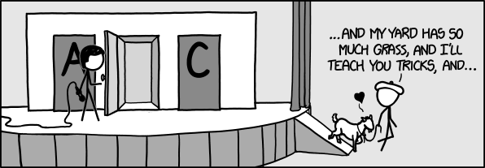

What are the most interesting or popular probability puzzles in which the intuition is contrary to the solution?
How to Confuse Curious Minds

My Pattern is Better than Yours
1. Flip a fair coin twice. What is the probability that you get two heads (HH)? What is the probability that you get heads followed by tails (HT)? Are these probabilities the same?(Yes, sure they are. No confusion yet.)
2. Flip a fair coin repeatedly until you get two heads in a row (HH). On average, how many flips should this take? What if we flip until we get heads followed by tails (HT)? Are the answers the same?
(Based on the previous problem, most folks assume that the answer is Yes, but the answer is No.).
3. Let's play a game: we flip a coin repeatedly until either HH emerges (I win) or HT emerges (you win). Is the game fair?
(Based on the previous problem, most folks assume that the answer is No, but the answer is Yes.)
4. We play the let's-flip-a-coin-until-a-pattern-emerges game. You pick HHT as your pattern, I pick THH. We flip a fair coin repeatedly until we get heads-heads-tails in a row (you win) or tails-heads-heads in a row (I win). Is the game fair?
(Based on symmetry, most folks assume that the answer is Yes, but the answer is No. I'm winning 75% of the games).
5. Seeing as THH is a better pattern, you request to pick it as your pattern. I graciously agree, and switch to TTH. I keep beating you most of the time. You switch to my TTH. I switch to HTT. I keep beating you. You switch to HTT. I switch to... HHT, your original losing pattern. Who's winning now?
(Most folks are by now expecting trouble, and guess correctly even though they feel it's impossible. Indeed, HHT is better than HTT, which is better than TTH, which is better than THH, which is better than HHT.)
This delightful result is known as Penney's game (No peeking! It's fun to work these out for yourself). I've used it at math circles many times, including actual sessions of physical coin flipping. It's fun.
Tuesday Girl
Many people are familiar with the old chestnut: pick a random family uniformly among all families with exactly 2 children of which one (at least) is a girl. What is the likelihood that the chosen family has 2 girls? Under the usual assumption of gender uniformity at birth, the answer is 1/3, not 1/2 as many people initially assume. This is fairly well known, but is still a useful warm-up.
Let's up the ante: what if we pick a random family among all families with exactly 2 children, at least one of which is a girl born on a Tuesday?
(Most people assume that the day of week the birth took place on makes no difference. They're wrong. The likelihood of 2 girls in this new scenario is now a lot closer to 1/2 than it is to the original 1/3. It's a useful exercise to explain, intuitively, why that is).
It's best to explicitly state that twins are to be ignored here. It's also better to phrase the question precisely as sampling from a well-defined sample space, rather than the usual pitfall-laden tales of "you meet a stranger and they tell you they have two children and at least one is a girl born on a Tuesday".
This fun problem made the rounds circa 2010, apparently starting with a talk by Gary Foshee at a Gathering for Gardner meeting. When intuition and math probably look wrong is one of many write-ups. Again, no peeking - figure it out!
The Next Card
I shuffle a deck of cards and deal them one by one, as slowly as you need me to. You observe the sequence of cards and at any point of your choosing you say Stop. I then deal the next card: if it's black, you win. If it's red, you lose. No jokers and no sleight-of-hand. If you fail to say Stop until the very end, the last card determines the outcome of the game.
What's your strategy?
(Students are quick to suggest many clever strategies, like counting reds and saying Stop as soon as at least 3 more reds than blacks were seen. The thing is, no strategy makes any difference whatsoever in this game - all strategies yield a winning probability of exactly 50%, and there's a simple reason for that).